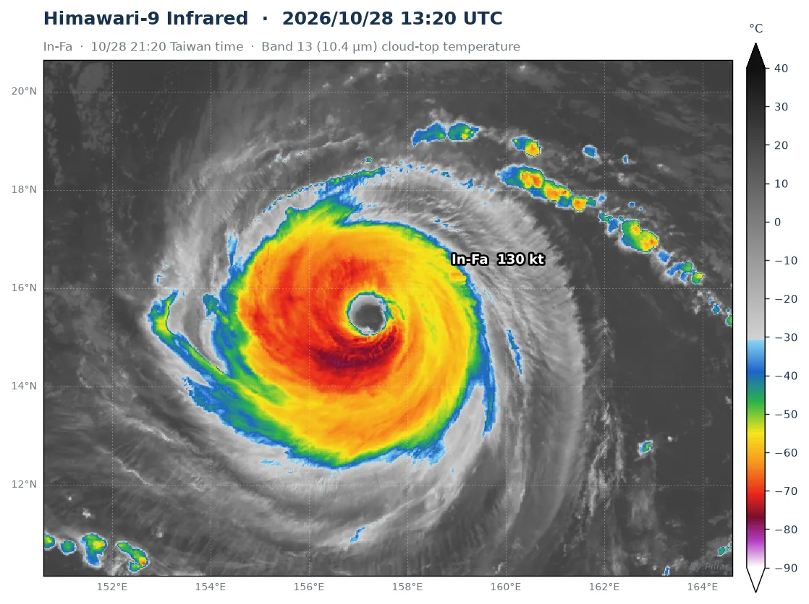
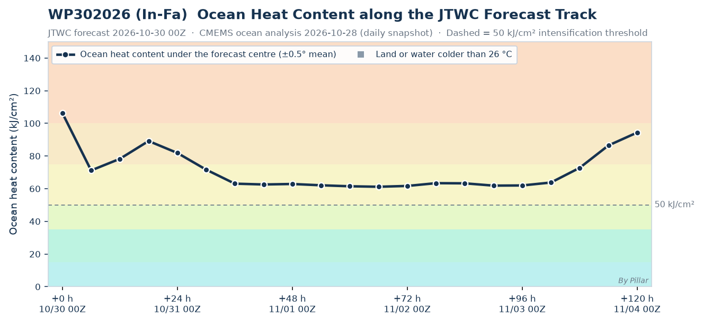
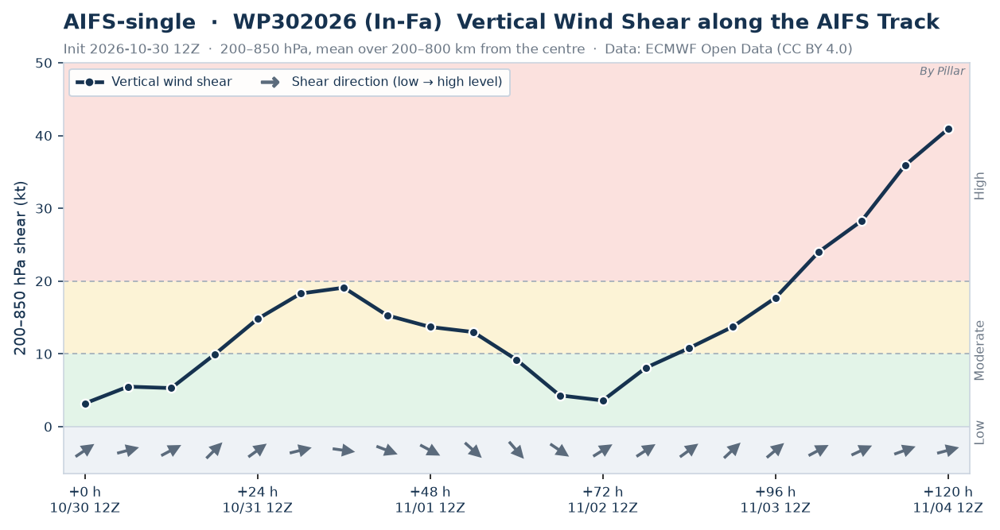

IN-FA
Cat4 Cat4 ·130 kt ·15.1°N, 158.9°E
1 active system(s) · ensemble guidance from 9 models, refreshed every 10–15 minutes.
IN-FA
Moving west at about 24 km/h.向西移動，時速約 24 公里。
Strengthening to 135 kt (Cat4) in 24 h.24 小時後增強至 135 kt（Cat4）。
Taiwan landfall: under 1% in every model.登陸臺灣：各模式機率都低於 1%。

How to read this
Himawari-9 infrared (band 13, 10.4 µm) for the last 3 hours, one frame every 10 minutes, centered on the storm; it opens on the latest frame · Colors show cloud-top temperature: the colder the top, the taller the cloud and the stronger the convection; a warm dot ringed by the coldest colors is the eye and eyewall · Centred on the latest JTWC position (warnings come every 6 h, so the storm may have moved a little since); the track and JTWC forecast are on the ocean heat content map below · Raw data from the NOAA/JMA copy on AWS, observation time in the title of each frame
 🔍 Click to enlarge
🔍 Click to enlargeHow to read this
Tropical cyclone heat potential: heat stored above 26 °C between the sea surface and the 26 °C isotherm (kJ/cm²), computed from the latest daily CMEMS (Copernicus Marine) 1/12° ocean analysis, or HYCOM (US Navy) as a backup · A thick warm layer keeps the water under a typhoon warm even when it stirs the ocean, which favors strengthening; about 50 kJ/cm² (yellow and warmer) is a common threshold · Black = water colder than 26 °C or land · Dot = current JTWC position, solid line = track so far, dashed = JTWC forecast (dots every 24 h)
Ocean Heat Content along the JTWC Track

🔍 Click to enlargeHow to read this
Ocean heat content under the forecast centre, sampled every 6 h along the latest JTWC forecast track (mean within ±0.5° of the centre) · Dashed line = 50 kJ/cm², a common threshold for intensification: above it the warm layer is thick enough that the storm’s own mixing does not cool the surface much · Grey squares = land or water colder than 26 °C · The ocean analysis is one daily snapshot, so this is the ocean the storm will meet if it follows the JTWC track, not a forecast of how the ocean changes

🔍 Click to enlargeHow to read this
Difference between the 200 hPa and 850 hPa winds, averaged 200–800 km from the centre, every 6 h along the AIFS-single (deterministic) forecast track — winds and track come from the same AIFS run · Strong shear tilts the storm's upper and lower circulation apart and usually stops it strengthening: below 10 kt is low, 10–20 kt moderate, above 20 kt high · Arrows = direction the shear points (from the low-level wind toward the upper-level wind); the storm's heaviest rain and convection tend to sit downshear-left · Data: ECMWF Open Data
 🔍 Click to enlarge
🔍 Click to enlarge


How to read this
AIFS-single 500 hPa streamlines, wind speed (shading) and height (gray, every 30 gpm) · Red line = 5880 gpm, the usual edge of the subtropical high: typhoons tend to move around it, west while the high extends west, turning north where it ends · Navy line and dot = AIFS-single track and the storm's position at that time
 🔍 Click to enlarge
🔍 Click to enlargeSource: Joint Typhoon Warning Center (JTWC) — U.S. Navy & Air Force
 🔍 Click to enlarge
🔍 Click to enlarge| Hour | JTWC10/28 06:00 | JMA10/28 12:00 | CWA10/28 12:00 |
|---|---|---|---|
| Now | 15.1°N 158.9°E130 kt | 15.4°N 157.6°E95 kt | 15.4°N 157.5°E99 kt |
| +12 h | 15.5°N 156.3°E135 kt | 15.8°N 154.8°E100 kt | 16.0°N 154.6°E107 kt |
| +24 h | 16.1°N 153.2°E135 kt | 16.3°N 151.5°E100 kt | 16.8°N 151.1°E107 kt |
| +48 h | 18.1°N 146.3°E130 kt | 19.0°N 145.0°E100 kt | 19.0°N 144.4°E107 kt |
| +72 h | 21.4°N 142.5°E115 kt | 22.0°N 142.7°E90 kt | 21.7°N 142.3°E103 kt |
| +96 h | 22.1°N 140.9°E105 kt | 21.3°N 141.0°E85 kt | 21.4°N 140.5°E99 kt |
| +120 h | 22.0°N 138.1°E105 kt | 21.4°N 137.0°E80 kt | 21.8°N 136.9°E93 kt |
How to read this
JTWC (US), JMA (Japan) and CWA (Taiwan) official tracks · JTWC reports 1-minute winds, JMA and CWA 10-minute winds, so JTWC numbers run higher for the same storm · Time under each agency = forecast base time (UTC) · Map labels = valid time, day/hour UTC (e.g. 23/12Z = 23rd 12:00 UTC = 20:00 Taiwan time)
| Model | WN3-C10/28 06Z · ≤360 h | WN2-C r210/28 06Z · ≤330 h | WN2-C r110/28 06Z · ≤300 h | WN2-C 100010/28 06Z · ≤360 h | GENC10/28 06Z · ≤360 h | AIFS-ENS10/28 06Z · ≤360 h | AIFS-single10/28 06Z · ≤240 h | ECMWF-ENS10/28 06Z · ≤144 h | ECMWF HRES10/28 06Z · ≤144 h | AIGEFS10/28 06Z · ≤240 h | AIGFS10/28 06Z · ≤234 h | GEFS10/28 06Z · ≤192 h | GFS10/28 06Z · ≤240 h |
|---|---|---|---|---|---|---|---|---|---|---|---|---|---|
| Taiwan landfallstorm centre moves onto Taiwan's main island (outlying islands excluded) | |||||||||||||
| tw_landfall | <1% | <1% | <1% | <1% | <1% | <1% | — | <1% | — | <1% | — | <1% | — |
| City striketrack passes within 1° (~111 km) of the city | |||||||||||||
| manila | <1% | <1% | <1% | <1% | 2%11/08 09Z | <1% | — | <1% | — | <1% | — | <1% | — |
| tokyo | <1% | 2%11/05 19Z | <1% | <1% | <1% | <1% | — | <1% | — | <1% | — | <1% | — |
| taipei, taichung, kaohsiung, hualien, hengchun: under 1% in every modeltaipei、taichung、kaohsiung、hualien、hengchun：各模式都低於 1% | |||||||||||||
How to read this
Share of members whose track passes within 1° (~111 km) of the city · Time below = median first arrival among those members (UTC) · Taiwan cities always shown; others only when any model reaches 1%


Western Pacific Tropical Cyclone Genesis Potential — Ensemble Overview
 🔍 Click to enlarge
🔍 Click to enlargeCircles = ensemble members at each 6-hr step, colored by minimum sea level pressure. Gray lines = individual ensemble tracks (up to 360 h; GEFS 120 h). Data sourced from Google DeepMind WN3-C.


Storm Archive
Every storm this site has followed: the real JTWC track, how each model's forecasts changed run by run, and how far off they turned out to be.
Thick colored line = the real JTWC track, colored by intensity · Orange = the selected run's ensemble-mean (or deterministic) forecast, with a dot every 24 h · Thin lines = all other runs of the same model, light = older, dark = newer · Drag the slider to step through the runs
How to read this site
This site gathers AI and physics-based ensemble forecasts for Western Pacific tropical cyclones and redraws them in one common style every 10–15 minutes, next to the official forecasts from JTWC, JMA (Japan) and CWA (Taiwan). Each storm page has five tabs: Summary (a 3-hour Himawari-9 infrared satellite loop, the ocean heat content under the storm, the vertical wind shear along the AIFS track, the 500 hPa steering flow, the JTWC forecast, the official forecasts side by side, and Taiwan landfall and city strike probabilities), Track (model comparison, ensemble maps, animation, an interactive map and track trend), Strike (strike probabilities by area, by period and for 34-kt winds), Intensity (intensity forecast) and Verification (track, along-/cross-track and intensity errors). One model menu at the top switches every chart to the same model. The Archive keeps every storm after it is gone, with its real track and how the forecasts did.
Satellite Loop (last 3 hours)
Ocean Heat Content
Ocean Heat Content along the JTWC Track
Vertical Wind Shear along the AIFS Track
Steering Flow (500 hPa)
JTWC Official Forecast
Official Forecasts Compared
Taiwan Landfall & City Strike Probability
Multi-Model Comparison
Ensemble Track Forecast
Track Evolution Animation
Interactive Track Map
Track Trend
Strike Probability
Strike Probability by Period
Intensity Forecast
Track Error by Model
Storm Archive
Genesis
iPhone: open the site in Safari, tap Share → Add to Home Screen. Android: open it in Chrome, tap ⋮ → Add to home screen. It opens full screen like an app and always shows the latest forecast. Links shared on LINE or Facebook show a preview card with the latest map, storm name, intensity and update time.
Not for operational use. For official warnings, follow your national meteorological agency.
Probabilities on this site are the share of ensemble members that forecast an outcome — a measure of how much the models agree, not an official forecast probability. A deterministic run (AIFS-single, ECMWF HRES, AIGFS, GFS) is a single possible scenario.